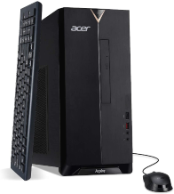
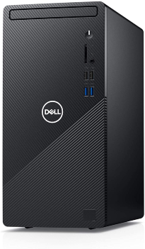
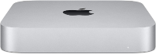
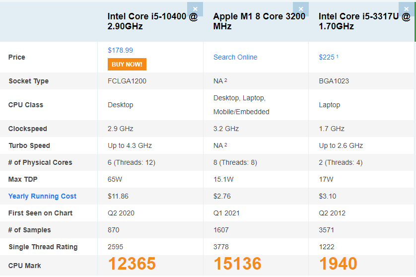

by Nate Nichols
I am writing this to illistrate the different computer options your office has for new computers please consider these options then fill out the "Questions Survey" at the bottom of the page and I will get back to you in the next 48 hrs.
|
|
Windows |
Mac |
| Windows has a lot of benefits because your office is already running windows and you know exactly how it works. Most of these computers listed below offer Windows 10 Pro which has more functionality than Windows 10 that you currently have | Apple on the other had offers a slim, sleek, easy to operate, and small device allowing for more desk space. The transition to MacOS will be difficult with the age and experience of your office. But you need to know that the option is not off the table. |
First off, What is a benchmark test?
Benchmark Tests-consist of standardized tests that check the preformance of a computer. These tests are only looking at the processer speed and ablilty to handle load. The score is produced numerically.
Now we understand what benchmark tests are see below each of the options that I have researched for you and your team.
|  |  |  | |
| Acer Aspire TC-1660-UA92 Desktop | 10th Gen Intel Core i5-10400 6-Core Processor | 12GB RAM | 512GB SSD | Dell Inspiron 3880 Desktop Computer - Intel Core i5 10th Gen, 12GB RAM, 512GB SSD | Apple Mac Mini with Apple M1 Chip 8GB RAM, 256GB SSD Storage | Apple Mac Mini with Apple M1 Chip 16GB RAM, 256GB SSD Storage |
| $549.99 | $818.00 | $649.99 | $877.92 |
| ⭐⭐⭐⭐(1680 ratings) | ⭐⭐⭐⭐(771 ratings) | ⭐⭐⭐⭐(2291 ratings) | ⭐⭐⭐⭐⭐(292 ratings) |

When we take a look at the data above the first two contenders are running an Intel core i5-10400 with a benchmark score of 12365. We compare that to the preformance of the Apple M1 chip clocking in at a benchmark of 15136. The Which is astounding because of the size of the entire unit is just so .. small. The difference between the 2 processors is the apple M1 Chip uses 8 cores instead of only 6 cores from the intel i5.
Analysing both of these benchmarks in comparison to your current set up is just, wow. The intel i5 processor released in 2012 measured a measly 1940 cpu mark. Just an FYI the $300 Lenovo Thinkcentre released in 2019 (probably the ones you bought) marked 4807 and the $800 Lenovo Thinkcentre (the expensive ones she should have bought) marked 7496 respectively.
I believe that we have a winner! It has to be the Acer Aspire TC-1660-UA92 Desktop | 10th Gen Intel Core i5-10400 6-Core Processor | 12GB RAM | 512GB SSD having the same specs of the Dell Inspirion but coming in at $549.99. I believe this will get you the best preformance for you buck. Although anything is an improvement at this point I believe this to be the best solution for your office.